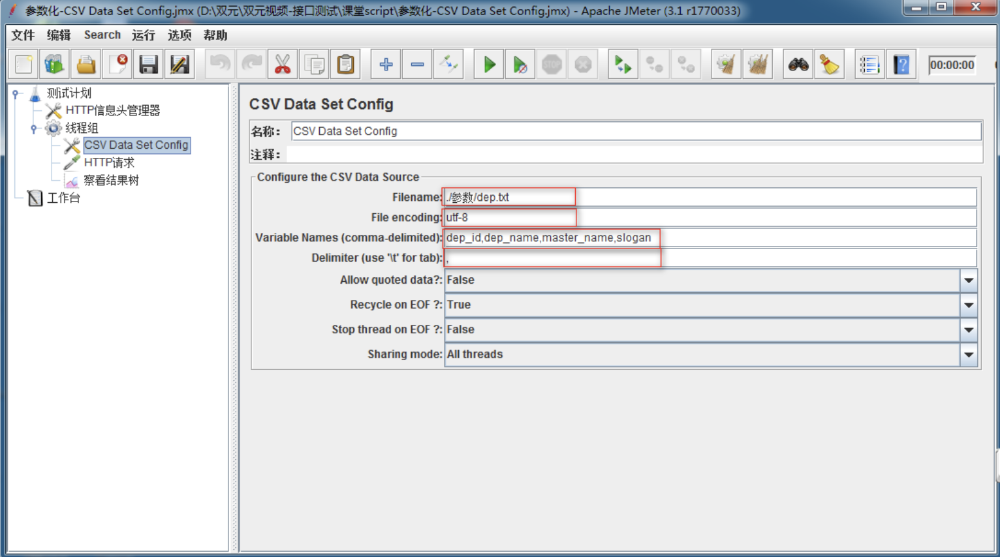
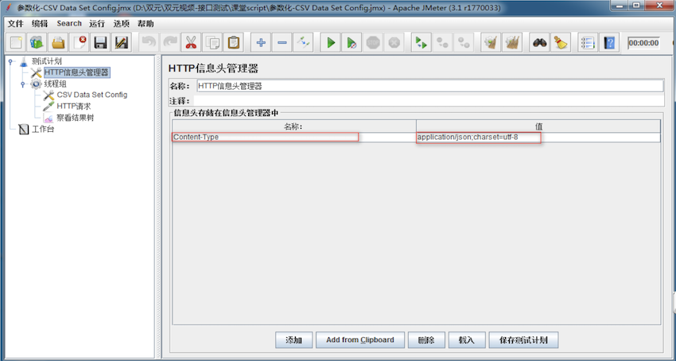
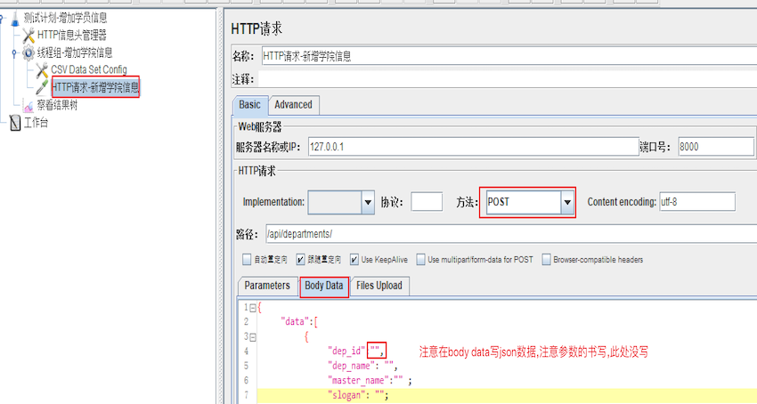
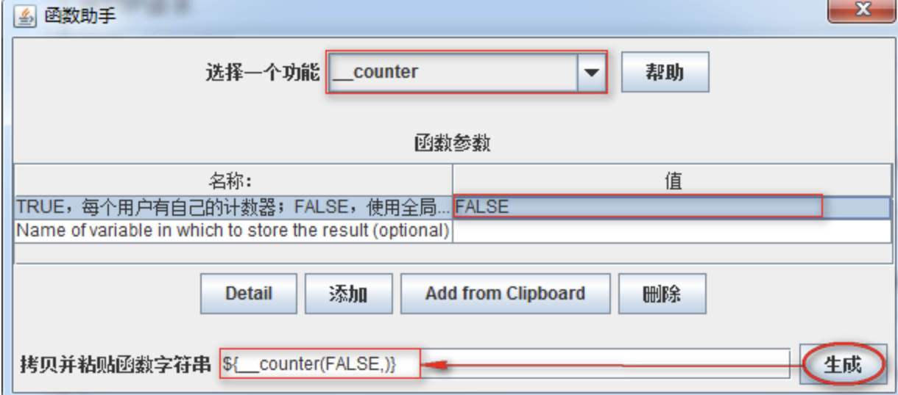

参数化
学习目标
- 了解参数化的分类
- 能够使用CSVDataConfig进行多条数据测试
- 能够定义用户参数
- 了解用户自定义变量的过程
- 能够使用函数进行测试
1. 为什么要参数化
现在有下面需求:
学院-新增100条数据:
1) 请求方法：POST
2) 请求地址：http://127.0.0.1:8000/api/departments/
3) 请求JOSN报文：
4) 调用传入的json串如下（可新增多条，之间用,隔开）：
{
"data": [
{
"dep_id": "T01",
"dep_name": "Test学院",
"master_name": "Test-Master",
"slogan": "Here is Slogan"
}
]
}
思考
如何快速实现??
2. 参数化概述
2.1 Jmeter参数化的概念
当使用JMeter进行测试时，测试数据的准备是一项重要的工作。若要求每次迭代的数据不一样时，则需进行参数化，然后从参数化的文件中来读取测试数据.
参数化就是动态的获取或设置数据.
参数化：是自动化测试脚本的一种常用技巧，可将脚本中的某些输入使用参数来代替,在脚本运行时指定参数的取值范围和规则。
例如登录时利用GET/POST请求方式传递参数的场景.
脚本在运行时，根据需要选取不同的参数值作为输入，该方式称为数据驱动测试（Data Driven Test），而参数的取值范围被称为数据池（Data Pool）。
2.2 参数化的四种方式及使用场景对比
| 参数化 | 使用场景 | |
|---|---|---|
| 1 | CSV Data Set Config | 适用于参数取值范围较大的时候使用，该方法具有更大的灵活性 |
| 2 | User Parameters | 适用于参数取值范围很小的时候使用 |
| 3 | User Defined Variables | 一般用于Test Plan中不需要随请求迭代的参数设置，如：Host、Port Number |
| 4 | 函数 | 可作为其他参数化方式的补充项，如：随机数生成的函数${__Random(,,)} |
3. CSV Data Set Config
概念：一种从外部读取数据功能的组件
3.1 实施方案分析
1. 基于测试计划->线程组
2. 基于线程组->配置元件->CSV Data Set Config
3. 基于线程组->Sampler->HTTP请求
4. 基于测试计划->HTTP信息头管理器
5. 基于测试计划->监听器->察看结果树
3.2 组件要点分析
1. 线程组:循环次数10
2. CSV Data Set Config 读取变量配置
3. HTTP请求：Body Data填写(JSON报文) 方法(POST)
4. 参数化引用格式：${参数名} 如：${dep_id}
5. HTTP信息头管理器：Content-Type:application/json;charset=utf-8
3.3 参数配置图

1. Filename:文件路径+文件名+后缀名 如：d:/a.txt;
2. File Encoding:文件编译字符编码，一般设置utf-8;
3. Vaiable Names:读取参数后保存的变量名称;
4. Delimiter:如文件中使用的是逗号分隔，则填写逗号；如使用的是TAB，则填写\t;
5. Allow quoted data: 是否允许引用数据，默认false，选项选为“true”的时候对全角字符的处理出现乱码 ;
6. Recycle on EOF？：是否循环读取参数文件内容；True是循环读取; False时,读取文件末尾就不在继续读取.
7. Stop thread on EOF?：当Recycle on EOF为False时（读取文件到结尾），停止进程，当Recycle on EOF为True时，此项无意义;
8. Sharing mode:共享模式，即参数文件的作用域.
3.4 添加http信息头管理器并进行参数配置
作用: 服务器请求的数据格式.

参数配置:
1. Content-Type:指定请求信息格式-类型名称
2. application/json:指定请求信息为-JSON格式
3. charset=utf-8:字符编码
3.5 添加http请求

3.6 总结
1. CSV Data Set Config 配置参数设置
2. 参数化引用格式
3. HTTP请求
4. HTTP信息头管理器作用与设置
4. 用户定义变量
用户可根据需求自定义相应的变量，一般做全局变量使用。
分析：
1. 通过概念我们知道，【用户定义的变量】一般做全局变量使用，不适合参数需求量大时的选择
2. 所以在这里我们不在使用，用户定义的变量去做我们学院新增时的解决方案
3. 主要讲解下它做参数化时的使用步骤和方式
4.1 需求场景
1. 查询学院-指定：http://127.0.0.1:8000/api/departments/T02/
2. 接口查询指定的id(T02)采用参数动态获取方式
4.2 解决方案分
1. 参数化组件：用户定义的变量 (测试计划->线程组->配置元件->用户定义的变量)
2. 线程组
3. 请求组件：HTTP请求
4. 查看结果组件：察看结果树
4.3 效果图

1. 名称：变量名称(参数化引用时使用)
2. 值：变量的值(通过引用变量名称获取的值)
3. Description：备注说明
4.4 总结：
1. 一般做设置全局变量
2. 请求时附带少量参数需求使用
5. 用户参数
一种参数设置方式，用户可设置参数名称以及参数值;
我们使用用户参数作为参数化方式对学院新增10条记录问题进行实现
5.1 解决方案实施分析
1. 位置：测试计划-->线程组-->前置处理器-->用户参数
2. 其他组件和CSV Data Set Config实现新增10个学院相同，去除 CSV Data Set Config组件
5.2 组件要点分析
1. 线程组:注意是【线程数】为10
2. 用户参数：学院每个属性为一个参数名称;参数格式：可以是数字、字母、下划线开头，建议最好是实义单词
3. HTTP请求：Body Data填写(JSON报文) 方法(POST)
4. 参数化引用格式：${参数名} 如：${dep_id}
5. HTTP信息头管理器：Content-Type:application/json;charset=utf-8
5.3 用户参数配置

1. 添加变量：学院资源属性 (dep_id、dep_name、master_name、slogan)
2. 添加用户：每个线程为没一个用户
5.4 用户参数-总结：
1. 用户参数位置
2. 线程组设置
3. 引用参数化方式
4. 用户参数适合满足少量参数化需求场景使用
6. 函数
函数是完成某个指定功能代码的封装。
1. 函数查找方式：函数助手对话框
1) 菜单-选项->函数助手对话框
2) Ctrl+Shift+F1
3) 工具栏倒数第二个记事本图标
2. 函数在Jmeter中有非常多类型（计数函数、日期函数、随机函数...）
6.1 需求：
1. 查询学院-所有：http://127.0.0.1:8000/api/departments/
2. 查询10次，在每次请求地址后面增加访问记录数
http://127.0.0.1:8000/api/departments/?num=1
http://127.0.0.1:8000/api/departments/?num=2
6.2 需求关键点分析
1. 起个计数参数名 如：num
2. 把计数参数名的值给参数化
3. 参数化的值使用计数函数(count)
6.3 实施方案
1. 基于测试计划添加线程组(循环次数10)
2. 基于线程组添加HTTP请求
3. 基于测试计划添加察看结果树
6.4 函数配置

1. 选择一个功能：选择_counter计数函数
2. 第一个参数：TRUE，每个用户有自己的计数器；FALSE，使用全局计数器 我们选FALSE
3. 点击生成
4. 选择复制生成的函数
6.5 函数的结果图

?num=${__counter(FALSE,)}
1. ?：问号后面一切东东，HTTP请求不做解析
2. num：为我们起的一个计数参数名称
3. ${__counter(FALSE,)}：为我们粘贴进来的函数作为值使用
6.6 函数总结:
1. 使用方便快捷
2. 经常配合固定参数使用
7. 参数化方式总结
7.1 区别
1. CSV Data Set Config: 功能强大、适应各种迭代及多参复杂场景。
2. 用户参数：适应传递少量参数时使用
3. 用户定义的变量：和用户参数使用场景相似，不同在于一般做全局变量使用
4. 函数：功能强大，函数类型繁多，灵活度大，适应各种应用场景。
7.2 推荐
1. CSV Data Set Config
2. 函数